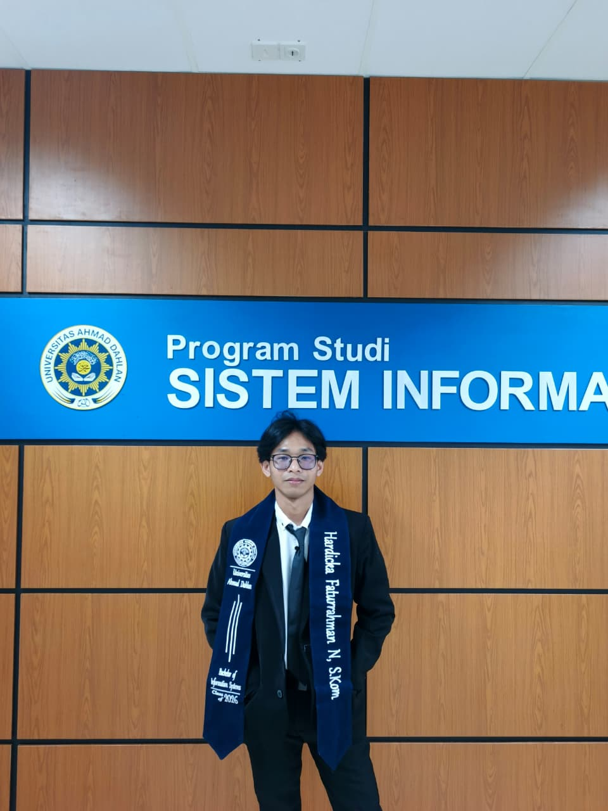
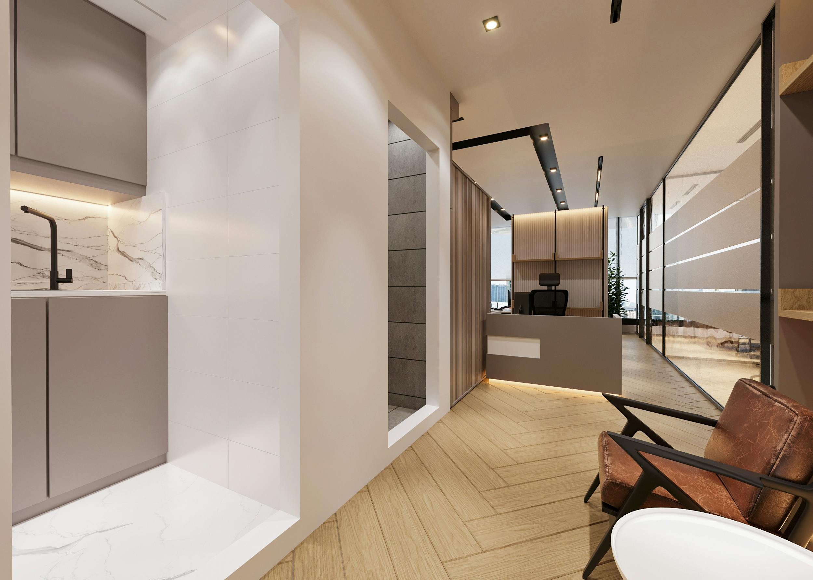
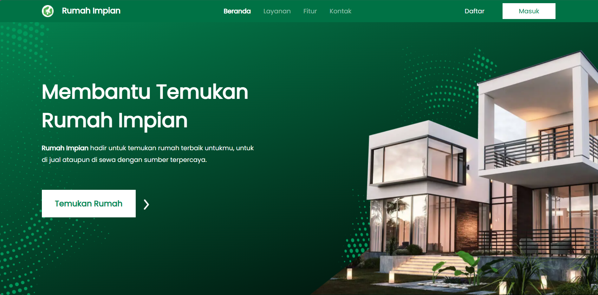

INFORMATION SYSTEM GRADUATE
Hardicka Faturrahman Nugradiono
Web development, database management, reporting, and system support.
Fresh graduate Sistem Informasi dari Universitas Ahmad Dahlan. Saya siap berkontribusi untuk role junior IT, web developer, database, atau system support.
About
Problem solver yang senang bekerja dengan data, website, dan sistem.
Saya memiliki pengalaman magang dalam reporting system, troubleshooting, pengembangan website, testing, perbaikan bug, dan pengelolaan database. Terbiasa bekerja sama dalam tim dan memahami kebutuhan project secara praktis.
Skills
Tech stack dan kemampuan utama.
SQL
MySQL
HTML
CSS
JavaScript
PHP
Laravel
Linux
Database Management
Troubleshooting
Reporting & Analytics
Microsoft Office
Experience
Pengalaman yang relevan.
Dec 2025 - Apr 2026
Staff Magang - Mutual Corporation
Reporting performa sistem menggunakan SQL dan Excel, support pengembangan aplikasi dan website, serta troubleshooting dasar.
2023
MSIB - PT Solusi Tiga Selaras
Membuat website sesuai kebutuhan project, membangun tampilan responsif, dan berkolaborasi dalam pengembangan web.
2021 - 2025
Universitas Ahmad Dahlan
S1 Sistem Informasi dengan fokus pada database, sistem, web development, dan analisis kebutuhan digital.
Projects
Project highlight.

2023
Website Property
Mengembangkan website sesuai kebutuhan project dengan tampilan yang responsif dan mudah digunakan.

2022
Rumah Impian - UI/UX Design Project
Mengembangkan desain UI/UX website properti "Rumah Impian" dengan pendekatan user-centered design, mulai dari analisis kebutuhan pengguna, wireframing, prototyping, hingga visual interface design untuk meningkatkan kenyamanan dan efektivitas pencarian properti.
2024
Digital Library App
Aplikasi perpustakaan digital untuk mengelola data buku, pengguna, peminjaman, pengembalian, dan pencarian buku.
2024
Digital Signature Platform
Merancang dan mengembangkan platform tanda tangan digital berbasis web yang mendukung validasi dokumen secara aman dan efisien. Berfokus pada analisis kebutuhan pengguna, alur proses bisnis, serta peningkatan efektivitas pengelolaan dokumen digital.
Contact
Let’s connect.
Terbuka untuk kesempatan kerja junior IT, web development, database, dan system support.